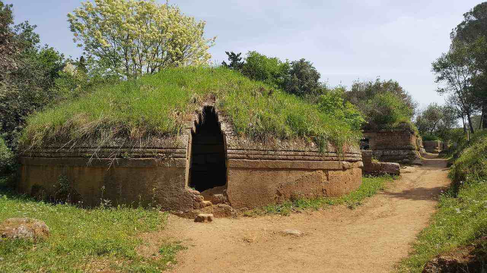
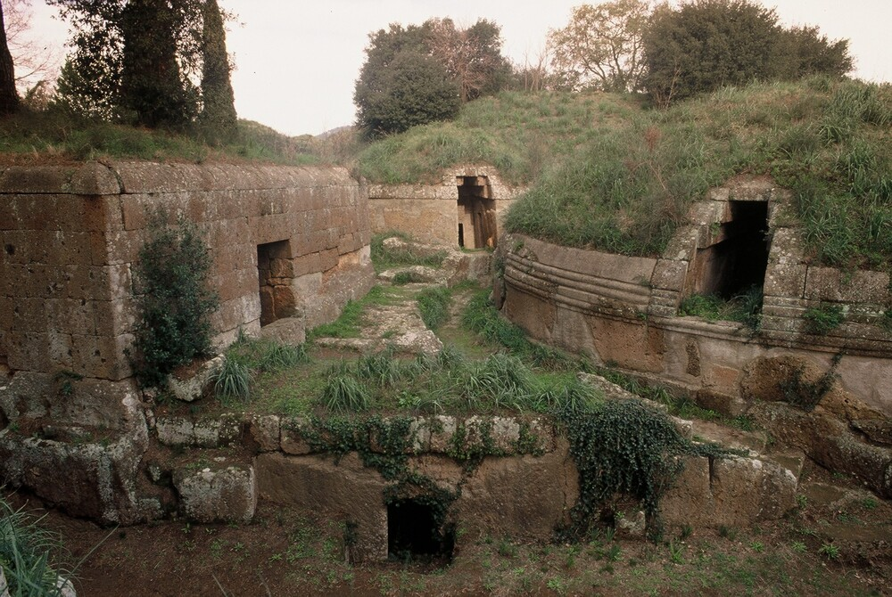
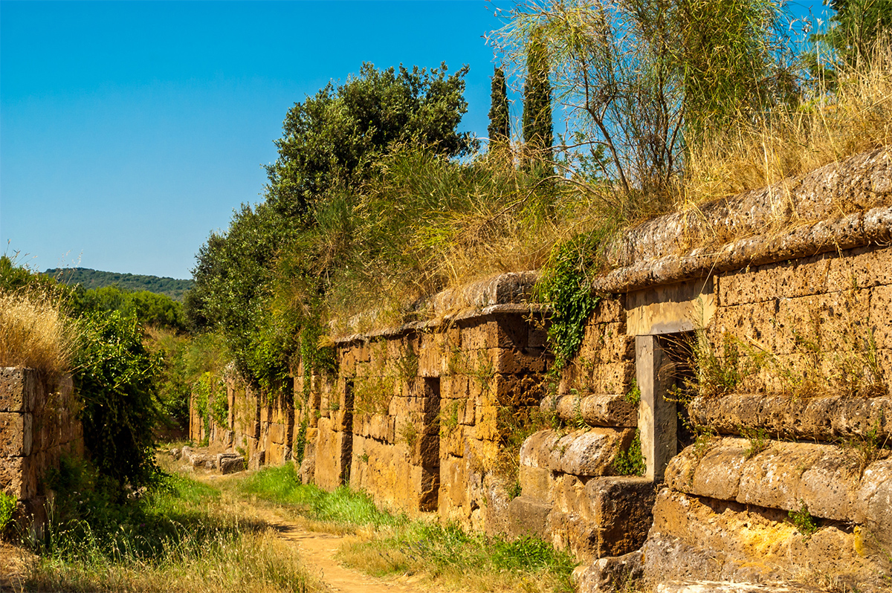
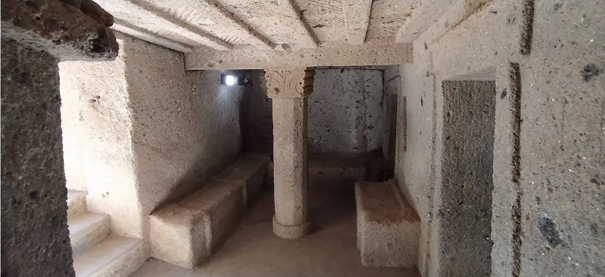
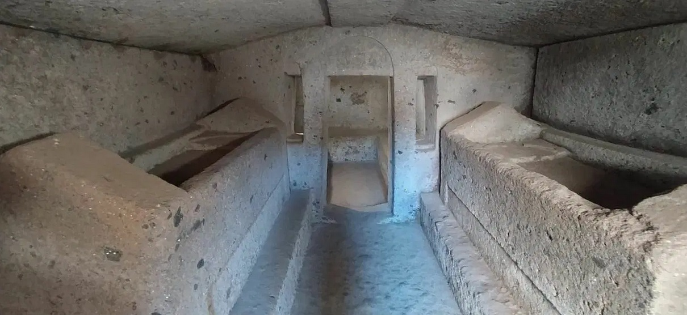
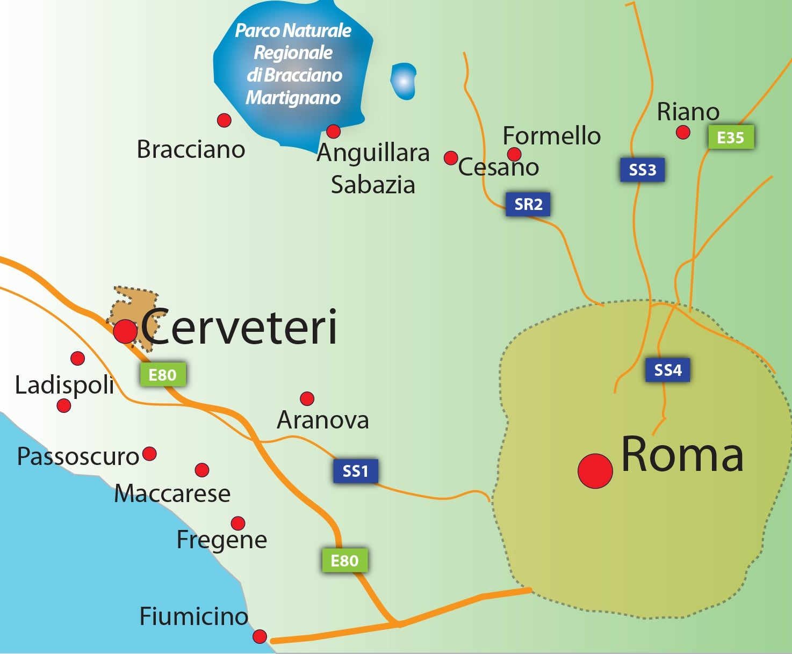

ホーム
ネクロポリス
フィレンシェ
シエーナ
ローマ
詐欺





チェルヴェーテリとタルクイーニアのエトルリア墓地遺跡群
チェルヴェーテリとタルクイーニアのエトルリア墓地遺跡群は、イタリアの世界遺産の一つです。これはイタリア中部ラツィオ州に位置する、エトルリア人が残した2つのネクロポリス（チェルヴェーテリ近郊のバンディタッチャ遺跡と、タルクイーニア近郊のモンテロッツィ遺跡）を指します。
チェルヴェーテリ近郊のネクロポリスは、イタリアのローマの西北西約35kmに位置する古代遺跡です。
エトルリア時代の墓には、以下の2つの様式が見られます：
・道なりに一直線に並んで築かれている「立方体」状の墳丘。訪問可能な区域は、紀元前6世紀に遡るvia dei Monti della Tolfaとvia dei MontiCeritiの2つの道（「via」）から成り立っています。
・凝灰岩の中に築かれた円形状の墳丘。岩を直接刳り抜いた内部には、玄室、羨道、および幾つかの部屋があります。

チェルヴェーテリへの地図。